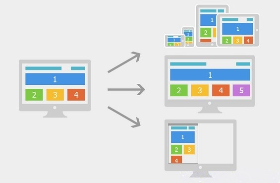

深入浅出H5的应用场景
大家眼中的H5
前台
产品
客户端
后台
运营
广义上
功能列表 - html5
语义化标签
功能标签
<audio>
<canvas>
<video>
功能列表 - css3
选择器
@Font-face web font文字渲染：实现
图标字体
多列布局
边框和颜色、圆角
渐变效果
阴影和反射
背景效果
盒子模型
响应式布局
Transitions, Transforms 和 Animation
功能列表 - javascript
WebSocket：实时通信&长连接
WebGL：3d效果
Local storage和web sql：离线缓存
File Api:读写本地文件
js sdk：获得原生应用的能力
photowall - 离线存储manifest
photowall - 本地存储localStorage
photowall - 图片处理
1、通过input=file点击上传照片
2、通过FileReader api获取照片的二进制数据
3、把图片渲染到设定了小尺寸的canvas
4、通过canvas生成base64数据
5、把base64通过img标签渲染到页面
6、可在页面缩放、旋转图片
7、把缩放、旋转的图片重新渲染到canvas，生成新的base64数据
8、通过ajax，把base64数据上传到服务器
9、服务器端生成想要的尺寸照片，并进一步压缩图片大小
年会小火箭
实时通信+css3动画+自定义字体
年会小火箭
年会小火箭
实时通信+css3动画+自定义字体
刷新
图表应用
画图+3D效果
2D
3D
重力感应
年会摇一摇拜年
飞车游戏
可以获取手机所处的角度、方位和朝向。
可以获取手机运动状态下的运动加速度等数据。
打飞机双人版
画布:处理图像,检测两个不规则图形之间的碰撞
实时通信:当飞机位置发生改变或者死亡实时通知另外一名玩家
刮刮卡
画布 + 图像处理
检测用户手指触摸屏幕图像位置的像素透明度设成0
更多游戏效果展示
即时聊天室
基于WebSocket进行实时通信的经典应用场景
目前已经实现以下功能：
文字消息
表情符号
语音消息
图片消息
地理位置
浏览器全屏
.........
即时聊天室
最佳体验环境：Android + Firefox(或Chrome)
http://chat.tangchanglin.com/chat.php
即时聊天室
主要涉及HTML5特性
通信：WebSocket
录音：getUserMedia('audio') + <audio>
拍照：getUserMedia('video') + <video> + <canvas>
位置：geolocation
全屏：requestFullscreen
H5能力扩展 - 微信JS-SDK
1、分享接口
2、图像接口
3、音频接口
4、智能接口
5、设备信息
6、地理位置
7、界面操作
8、微信扫一扫
9、微信小店
10、微信卡卷
11、微信支付
H5给设计师带来的改变

未来